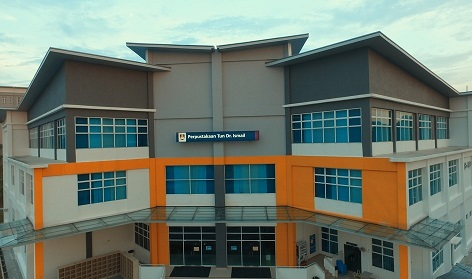

I had run my industrial training at Tun Dr Ismail Library. This place located at UiTM Pasir Gudang.
Even though it is a short period, I had gain many knowledge about what
I studies and can applied some of it in my works.
During industrial training, I get many information and direction of my studies.
I be able
to do a cataloging, acquisition, circulation and others library routine.
So, from this industrial
training it makes me more confident about my job in the future.


During my diploma studies, I have an experience in interview the librarian at UUM. From this
experience I gain more knowledge about library and their automation. It help me in my studies.
From this session, I also be able to relate the job and what I learn in class.
Other than that, I also have an interview session with Rumah Sarapan. It is located at Sungai Petani, Kedah.
My groupmate and I have an interview session for our final project which is about the enterpreneurship. From
this session I gain a knowledge on how to run a business and can be used for the future. From the interview session
I also can improve my communication with others.